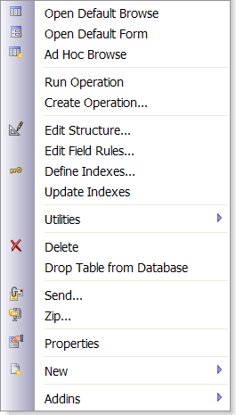
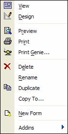

Right-Click Menus
Alpha Alpha Anywhere gives you granular control over the right-click menus in your forms and browses. You can define custom right-click menus for the form itself, and for each embedded browse and field on the Form.
While using the Control Panel (or any of Alpha Anywhere's layout editors), you can right-click on objects to set properties or perform actions. When you right-click, a right-click (or contextual menu) appears for you to make a selection from a list.
For example, if you right-click on a table in the Control Panel, the right-click menu lets you restructure the table, define field rules, rename the table, or perform other actions.

Right-Click Menu for a Table in Version 7
If you right-click on a form in the Control Panel, you'll see different options:

Right-Click Menu for a Form
As you see, the right-click menu lists options relevant to the selected object.
You can find most of the right-click menu commands in the Alpha Alpha Anywhere menu bar, at the top of the screen. Generally, it is easier to use the right-click menu because actions related to a specific object are grouped together in a single, easy-to-access list.
You can design custom menus that appear when you right click on a form or browse background. The menu that is displayed corresponds to the drop down menu associated with the first entry in your custom menu. For example, assume you designed a custom menu with this structure:
|
Records First record Last record Next record Previous record New record Reports Sales Report Inventory Report Window Cascade windows Tile windows horizontally Tile windows vertically |
If you specified this custom menu as the form's right click menu, then the following menu choices would appear when you right clicked on the Records entry:
|
First record Last record Next record Previous record New record |
For browses (both stand alone and embedded), you can further specify a different right-click menu depending on whether the user clicks on the row selector, the column selector, or in a cell on the browse. When you specify a custom right-click menu for a browse, it is optional to define custom right-click menus for the row selector or column selector. If you do not define these optional custom menus, Alpha Alpha Anywhere uses the same custom right-click menu for all situations (i.e. a right-click on a row selector, column selector, or a cell).
To specify a custom browse right-click menu for a row selector, you create a custom menu with a special name. If the custom right-click menu that you have specified for the browse is called br_rclick_menu, then you would create a menu called br_rclick_menu_row. Similarly, to define a custom right-click menu for a column selector, you would name the menu br_rclick_column.
Browse Cell and Form Field Menus
A browse cell or a field can be in one of the following states, and you can further specify (by following a prescribed naming convention) different right-click menus for each of these states:
|
State |
Description |
|
Locked |
Modal data entry is enabled, or the Allow Edits flag is turned off. |
|
Un-Locked (View Mode) |
Modeless data entry is enabled and the Allow Edits flag has not been turned off. The record is in View Mode. |
|
Un-Locked (Edit Mode) |
When the user is either editing data in an existing record, or entering a new record. |
The table below summarizes the naming conventions for custom right-click menus that you specify for individual fields on a form, or for browses (both stand alone and embedded).
|
Browse |
Displayed When You Right-Click on: |
|
Menu_name_row |
Row selector |
|
Menu_name_column |
Column selector |
|
Menu_name_cell_locked |
Locked cell (Modal data entry, or Allow Edits is off) |
|
Menu_name_edit |
Un-locked cell and the browse is in Enter or Change mode |
|
Menu_name_view |
Un-locked cell and the browse is in View mode |
|
Form Field |
Displayed When You Right-Click on: |
|
Menu_name |
Locked field (Modal data entry, or Allow Edits is off) |
|
Menu_name_edit |
Un-locked field and the form is in Enter or Change mode |
|
Menu_name_view |
Un-locked cell and the browse is in View mode |
 Note : When naming
a custom menu, the menu name is limited to 24 characters. For example,
menu_name plus underscore cell_locked must be 24 characters or less.
Note : When naming
a custom menu, the menu name is limited to 24 characters. For example,
menu_name plus underscore cell_locked must be 24 characters or less.
When you specify a custom right-click menu for a field on a Form, it is likely that you will want to specify this right-click menu for all of the fields on the Form. Use the "Set All Fields" button in the dialog that lets you set all fields to the same right-click menu.
 Note : In View
> Settings > Preferences > Right-Click Menus, you can
set the V4 Compatibility to "Yes" or "No". If you
set V4 Compatibility to "Yes", and right-click on a locked field
for which a custom right-click menu has not been defined, the custom right-click
menu for the form (if defined) will be shown. If V4 Compatibility is set
to "No", the system default Field right-click menu is displayed.
If V4 Compatibility is set to "Yes", and you define a custom
right-click at the form level, the custom right-click menu is used even
when you right-click on a field.
Note : In View
> Settings > Preferences > Right-Click Menus, you can
set the V4 Compatibility to "Yes" or "No". If you
set V4 Compatibility to "Yes", and right-click on a locked field
for which a custom right-click menu has not been defined, the custom right-click
menu for the form (if defined) will be shown. If V4 Compatibility is set
to "No", the system default Field right-click menu is displayed.
If V4 Compatibility is set to "Yes", and you define a custom
right-click at the form level, the custom right-click menu is used even
when you right-click on a field.
Adding a Right Click Menu for an Image Field
Assume that the object name of the image field is "bmp" and that you have built a menu named TheNameOfYourMenu. Place the following Xbasic code in the form's OnInit event.
|
:topparent:Bmp.Property_Add("right_click_menu") :topparent:Bmp.right_click_menu = "TheNameOfYourMenu" |
See Also